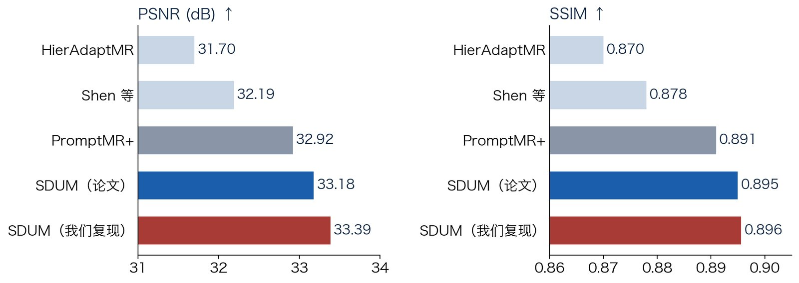
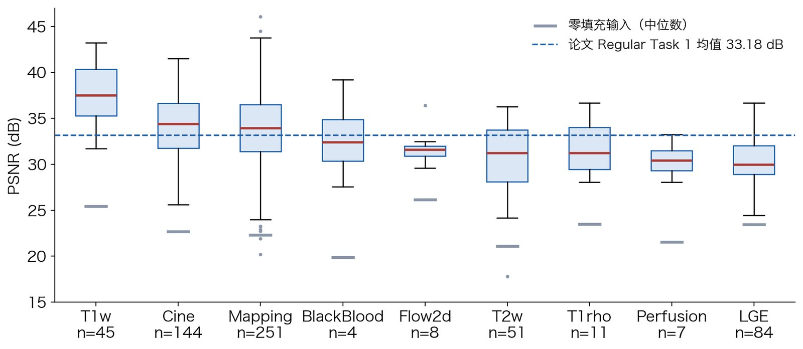
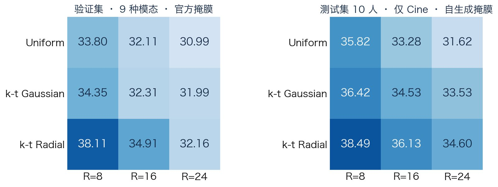
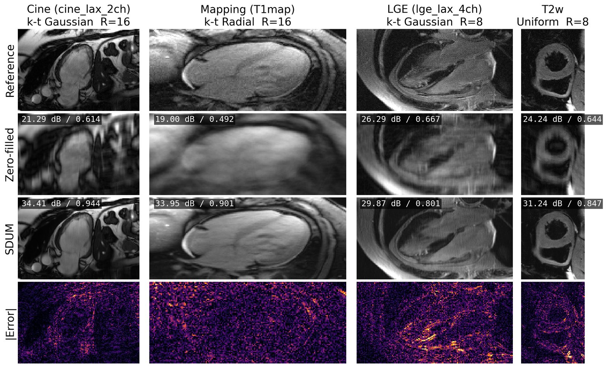
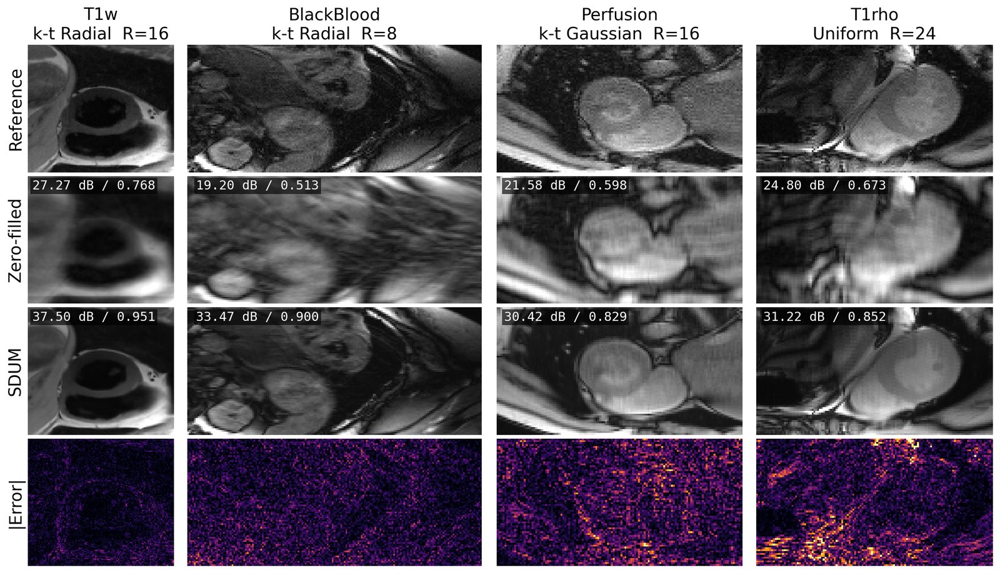
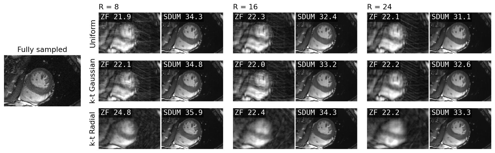
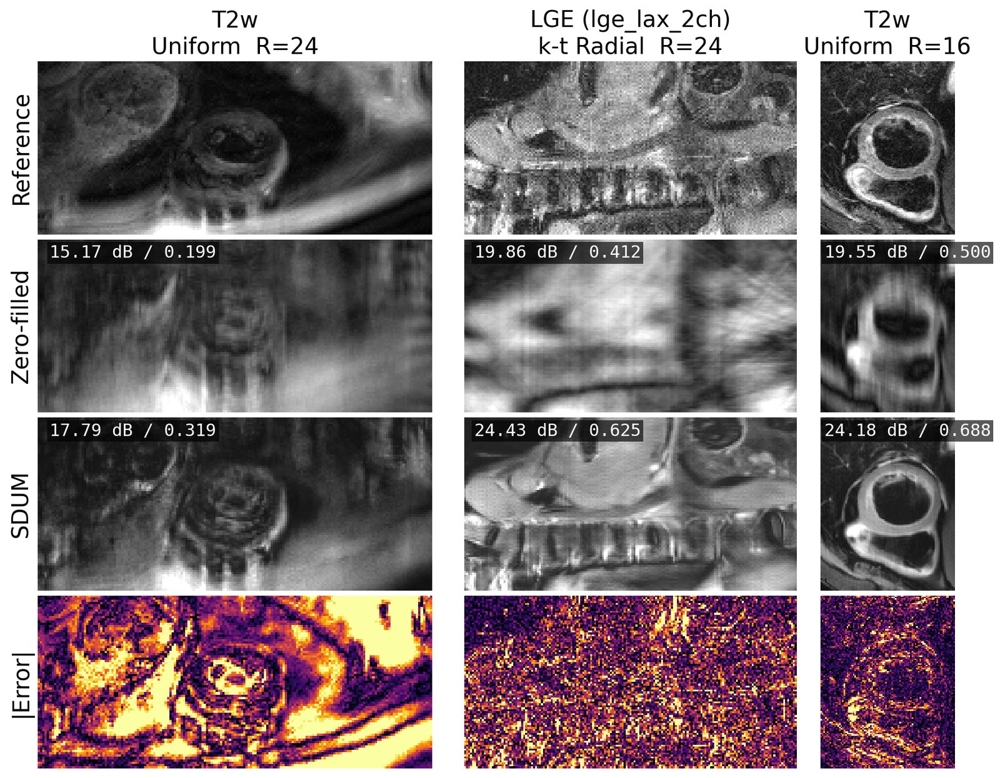

REPRODUCTION / INFERENCE + OFFICIAL METRICS
验证集 33.39 dB，
论文 33.18 dB。
用官方代码和 NVIDIA 发布的 base 权重（T=18，759M 参数），在 CMRxRecon2025 TaskR1 验证集 102 例、605 个文件、9 种模态上只做推理，按官方榜单的同一套代码（run4Ranking 中心裁剪 + calmetric）评测：PSNR 33.39 dB / SSIM 0.896 / NMSE 0.0134，论文 Table 1 Regular Task 1 为 33.18 / 0.895 / 0.014。另在测试集随机 10 人的 Cine 上用 9 种自生成掩膜跑了 324 组：34.93 dB / 0.926。训练、消融和规模曲线没有复现。
跑了什么
| A 验证集（与论文 Table 1 对照） | B 测试集抽样（检查泛化） | |
|---|---|---|
| 数据 | CMRxRecon2025 TaskR1 验证集，102 例 | CMRxRecon2025 TaskR1 测试集，随机 10 人，仅 Cine |
| 输入 | 主办方发布的欠采样 k 空间 + 官方掩膜 | 全采样 k 空间 × 自生成掩膜（仓库自带 ktSampling.py，与官方示例掩膜逐点一致 99.9%） |
| 规模 | 605 个文件，9 种模态、9 种掩膜 | 36 个文件 × 9 种掩膜 = 324 组 |
| 参考 | 赛后公开的全采样数据 | 同一份全采样数据 |
9 种掩膜 = 3 种轨迹（笛卡尔均匀、k-t 高斯、k-t 径向）× 3 种加速倍数（R = 8 / 16 / 24）。所有推理都是 batch=1、单张 RTX 4090；验证集共用 26229 s，显存峰值 11.7 GB。验证集有 606 个欠采样文件，其中 1 个没有对应的全采样参考，因此按 605 个评测。
评测口径
参考图、零填充图和 SDUM 输出走同一条路径：逐线圈 IFFT → RSS 合并线圈 → 仓库 run4Ranking 中心裁剪（取中间 1/3 宽 × 1/2 高的心脏区域、中间 2 层、前 3 帧；Mapping 取全部帧）→ 仓库 evaluation.calmetric（按 99.5 分位归一化，逐层逐帧平均）。最终按文件平均。
为了让参考和输入比较的是同一批层与帧，评测时做了两处对齐：
- Flow2d 轴序：全采样文件为 (nt, nz)，官方欠采样文件与掩膜为 (nz, nt)，按掩膜把参考转置。
- 末尾全零层：Center005 GE 的 6 个 T1w/T2w 欠采样文件末尾比全采样多 1–2 层全零层（例如 10 层对 8 层），中心裁剪会因此错层、PSNR 掉到 16–19 dB。把参考 k 空间末尾补零到同样层数后，这 6 个文件恢复到 31–41 dB。修正前全集为 33.30 dB / 0.893，修正后为 33.39 dB / 0.896。
与论文对照
| PSNR (dB) | SSIM | NMSE | |
|---|---|---|---|
| HierAdaptMR（论文 Table 1） | 31.702 | 0.870 | — |
| Shen 等（论文 Table 1） | 32.19 | 0.878 | — |
| PromptMR+（论文 Table 1） | 32.919 | 0.891 | — |
| SDUM（论文 Table 1） | 33.179 | 0.895 | 0.014 |
| SDUM（本次复现，605 文件） | 33.385 | 0.8956 | 0.0134 |
| 零填充输入 | 22.76 | 0.6186 | — |

残余差异可能来自：① 榜单的平均方式没有公开（按文件、按病例还是按切片）；② 本次少 1 个没有全采样参考的文件；③ 论文没有说明发布的 base 权重是否就是上榜的那一版。三者都无法从公开材料确认。
按模态与掩膜
| 模态 | 文件数 | SDUM PSNR | SDUM SSIM | 零填充 PSNR |
|---|---|---|---|---|
| T1w | 45 | 37.96 | 0.948 | 25.15 |
| Cine | 144 | 34.32 | 0.918 | 22.74 |
| Mapping | 251 | 33.79 | 0.913 | 22.29 |
| BlackBlood | 4 | 32.88 | 0.884 | 21.79 |
| Flow2d | 8 | 31.87 | 0.889 | 25.66 |
| T1rho | 11 | 31.76 | 0.897 | 23.07 |
| T2w | 51 | 30.79 | 0.848 | 21.33 |
| Perfusion | 7 | 30.48 | 0.840 | 21.99 |
| LGE | 84 | 30.31 | 0.811 | 23.61 |


重建样例



最差样本

验证集有 15 个文件低于 25 dB。左图的全采样参考本身就有明显的条状伪影，SDUM 输出与它差得很远；我推测这个最低分有一部分来自参考图质量，而不完全是重建错误 [INFERENCE]。中图参考噪声很重，SDUM 输出更平滑，误差图呈噪声状，PSNR 会惩罚这种去噪。右图结构正确，误差集中在心肌与脂肪边界。看长尾时要先分清是重建错了还是参考不可靠。
没做的部分与局限
- 只做推理：消融（Table 3）、规模曲线（Fig. 4 / Table 4）、数据规模实验都需要重新训练（论文用 64 张 H100），本次没有复现。
- 只覆盖 Regular Task 1：Regular Task 2、Special 1（5T）、Special 2（儿童）、CMRxRecon2024、fastMRI 脑与院内 CEST 都没跑。
- 平均口径未知：本次按文件平均；榜单口径不公开，0.2 dB 级别的差异不能再细分原因。
- 测试集部分用自生成掩膜：生成脚本来自仓库，但与官方测试掩膜不是同一批，数字只用于和验证集 Cine 比趋势。
- 权重版本：论文没说明发布权重是否就是上榜版本；本次结果与论文一致，只能说明二者表现相当。
文件位置
| 路径（/data/users/ckx/sdum-repro/） | 内容 |
|---|---|
code/NV-Raw2insights-MRI | 官方仓库 @ 99be712，未改 |
ckpt/nv_raw2insights_mri_base.pt | 发布的 base 权重 |
eval/prep_val.py、eval/val/ | 验证集清单（官方欠采样文件 + 掩膜 + 全采样参考路径） |
eval/eval_sdum.py | 评测脚本：参考对齐（Flow2d 转置、末尾补零层）+ run4Ranking + calmetric |
out/val/metrics_summary.md、metrics_per_file.csv | 验证集结果（修正后）；*_v1.* 为补零层修正前 |
out/cine10/metrics_summary.md | 测试集 10 人 Cine 结果 |
eval/fig_deck.py、out/deck_figs/ | 本页样例图的生成脚本与原图 |
RECORD.md | 完整实验记录 |
来源
- 论文（arXiv:2512.17137）与官方仓库；论文数字取自 Table 1。
- 数据：CMRxRecon2025 挑战赛（按数据使用协议，不转发数据与下载链接）。
- 本页复现数字由服务器评测脚本逐文件计算后汇总；样例图为
out/deck_figs/*.png的 JPEG 缩放版。